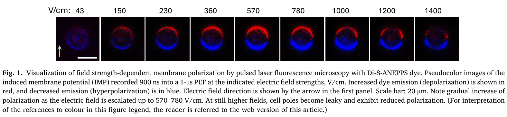
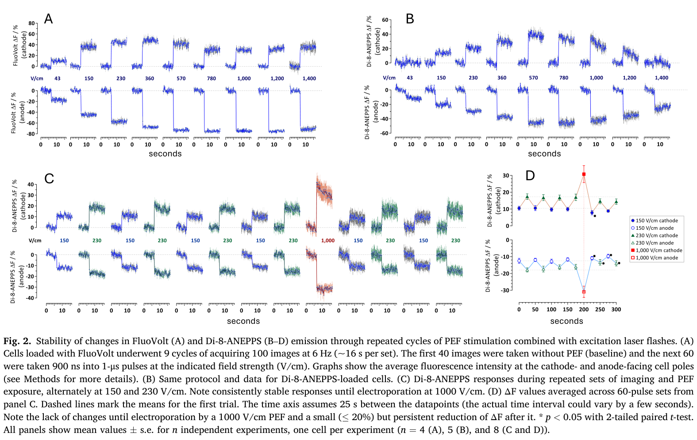
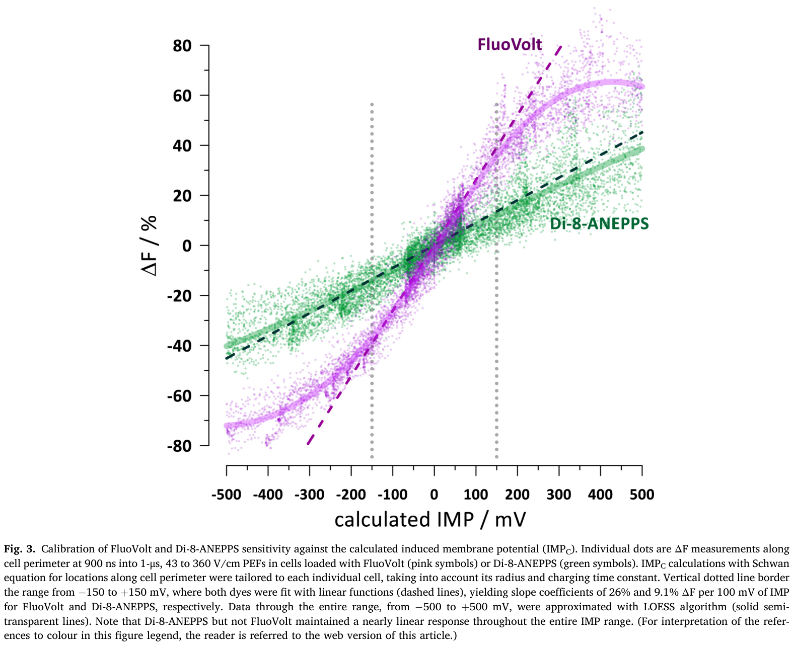
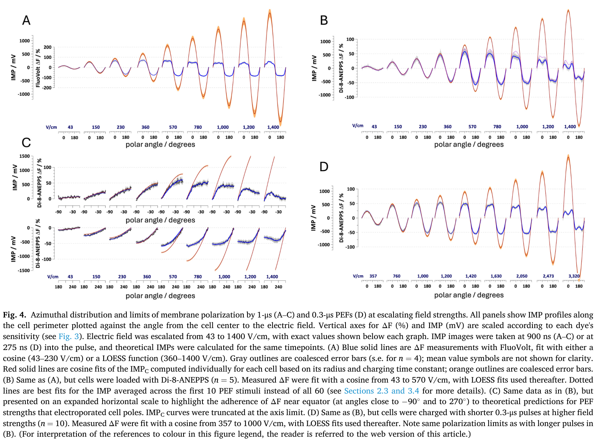
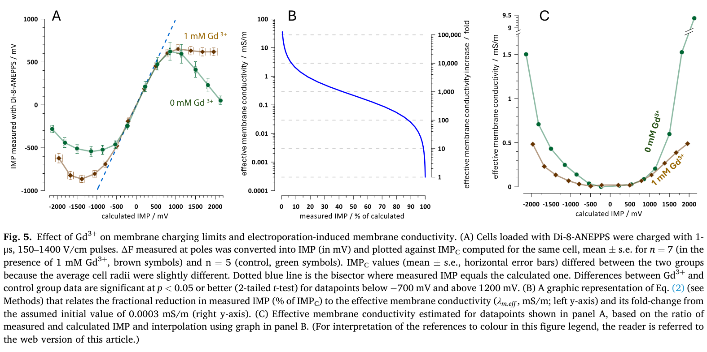
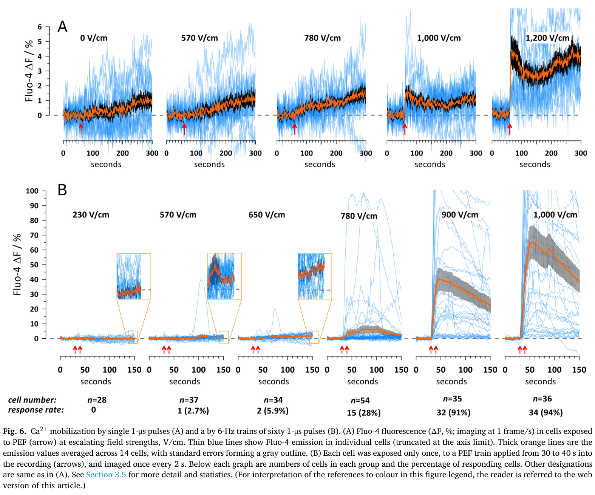
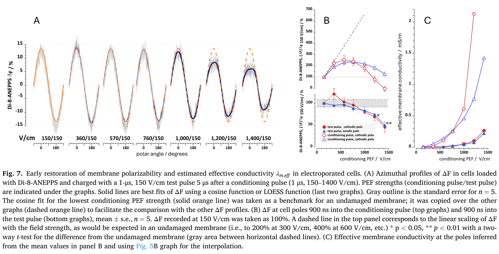

论文精读说明文档
Sub-microsecond optical measurements of cell membrane charging and lesioning by pulsed electric fields
用亚微秒脉冲激光频闪荧光成像，实测电穿孔阈值与电穿孔后膜电导率的微秒级恢复动力学。
论文信息
Bioelectrochemistry - 2026 - Semenov - Sub-microsecond optical measurements of cell membrane charging and lesioning by pulsed electric fields.pdf
一句话定位
这篇论文以亚微秒时间分辨率，用脉冲激光频闪荧光成像定量标定了两种膜电位染料（荧光探针 FluoVolt 和 Di-8-ANEPPS）在脉冲电场 (PEF, pulsed electric field) 下的响应范围与线性极限，确定了中国仓鼠卵巢细胞（CHO-K1）发生电穿孔 (electroporation) 的诱导跨膜电位阈值约为 500 mV，并首次在 6 μs 的时间窗口内追踪了电穿孔后膜电导率的恢复动力学。
为什么值得读
外加电场在细胞膜上诱导的跨膜电位（诱导膜电位，IMP, induced membrane potential）是一切电场生物效应的起点：神经激活、细胞电化疗 (electrochemotherapy)、基因转染，以及不可逆电穿孔 (IRE, irreversible electroporation) 消融肿瘤。然而，在接近或超过电穿孔阈值的高场强条件下，patch-clamp 电极封接会被击穿，传统电生理方法完全不可用；这正是光学测量方法的核心价值所在。
对你而言，这篇论文在三个层面上直接相关。第一，你的 IEEE TIM 差分测量工作面对的是"胞外电刺激污染了 patch-clamp 记录"的问题；这篇论文面对的是"在超强场强下 patch-clamp 根本不可用"的问题——两个工作从两个不同的量级出发，共同指向同一结论：在外加电场下，传统电生理方法面临原理性困难，需要额外的方法学设计才能得到正确的膜电位信号。 第二，论文系统标定了 FluoVolt 和 Di-8-ANEPPS 两种染料的线性范围，为你未来用光学方法独立验证差分 patch-clamp 结果提供了直接可参考的选型依据。第三，论文量化了电穿孔的 IMP 阈值（~500 mV），用 Schwann 方程可以反推：在你当前的刺激条件下（~1 mA、距细胞 ~200 μm），胞体 IMP 仅约 19 mV，离电穿孔阈值有 25 倍的安全边距，但这个边界数据是你在将来设计更强刺激实验时的定量参考。
术语先说明
图文导读







机制横向对照
以下表格对比了三种独立手段如何共同定位电穿孔阈值，以及各方法的信息内容和局限性。
| 手段 | 电穿孔指征 | 定位场强（1 μs PEF） | 对应 IMP | 局限 |
|---|---|---|---|---|
| FluoVolt ΔF 饱和 | ΔF 不再随场强增大 | ~360 V/cm | ~±200 mV | 饱和来自染料本身动态范围，不能区分染料极限与膜穿孔，不可单独用于定阈 |
| Di-8-ANEPPS ΔF 偏离余弦 | 极区实测 ΔF 低于 Schwann 方程预测 | ~570 V/cm | ~500 mV | 需要精确测量细胞半径和时间常数；赤道区信号始终线性，可作内参 |
| Ca2+ 内流（Fluo-4） | 胞内钙信号上升 | 650–780 V/cm（28% 响应率） | ~500–600 mV | Ca2+ 可来自多种来源，且单脉冲时 780 V/cm 仅 28% 响应，信号离散度大 |
| Gd3+ 条件 + Di-8-ANEPPS | 膜稳定后线性段延伸至更高 IMP | ~700 V/cm（对照阈值上移） | ~500–600 mV（与对照一致） | Gd3+ 本身可能影响通道活性；但对被动充电的 CHO 细胞影响有限 |
和你的研究怎么接上
PEF 膜响应的时间尺度与你的脉宽设计
本文实测 CHO 细胞的膜充电时间常数 τ 约在 0.5–1 μs 量级（R ≈ 7–9 μm）。你实验中神经元胞体 R ≈ 10 μm，τ 量级相近，但会被树突和轴突的复杂形态修正。关键结论：你常用的 100 μs 脉宽 >> τ，膜在脉冲期间已充电达稳态；Schwann 方程的稳态值适用。反之，如果未来用亚微秒脉冲，膜只能部分充电，IMP 将低于稳态预测——这正是本文 0.3 μs vs 1 μs 实验组对比所展示的。这个框架帮助你理解：脉宽不仅影响电荷量，还决定膜是否来得及"感受"到完整的等效电场。
光学测量 vs 电极测量：覆盖参数空间的互补
把 Semenov 的光学方案与你的差分 patch-clamp 方案并排放，它们覆盖了完全不同的参数区间：
| 维度 | 你的差分 patch-clamp | Semenov 的脉冲激光频闪成像 |
|---|---|---|
| 时间分辨率 | ~4 μs（250 kHz 采样） | ~亚微秒（激光闪光时刻精确控制） |
| IMP 量程 | 不受染料限制；毫伏级精确 | 受染料动态范围限制（FluoVolt ±200 mV；Di-8-ANEPPS ±500 mV） |
| 空间分辨率 | 单点（记录电极位置） | 沿细胞周长 360° 全分布 |
| 适用场强 | 低场强（~10 V/cm 量级，神经刺激） | 高场强（43–1400 V/cm，PEF/IRE 研究） |
| 对细胞的扰动 | 电极破膜（全细胞 patch）或接近（loose patch） | 无接触，染料嵌入膜但不破坏封接 |
| 校准基准 | 绝对电压（mV），直接标定 | ΔF/F 需与 Schwann 方程交叉标定才能换算 mV |
两者不竞争，互补。如果你将来希望用光学方法独立验证差分 patch-clamp 的结果，本文提供的标定数据给出了直接参考：在你的 IMP 量级（~几十 mV 以内），选 FluoVolt，它在该范围完全线性（26% ΔF/100 mV，信噪比好）；不要选 Di-8-ANEPPS 来测低 IMP——灵敏度 9.1%/100 mV 在毫伏级 IMP 下信噪比极差。
差分测量在快速电场下的挑战：刺激伪迹与充电时间的类比
你在 IEEE TIM 工作中处理的是刺激伪迹（stimulus artifact）：电极施加的外部电位污染了 patch-clamp 的记录通道，需要通过差分测量剔除。这篇论文揭示了一个在更高场强下同样存在的挑战：当电穿孔发生时，膜本身的电导率在纳秒内突变，使得 PEF 期间的 IMP 分布不再由静态 Schwann 方程描述，而是与膜孔道动力学耦合。这与你遇到的"电极伪迹改变了记录系统等效阻抗"问题在物理结构上同源——都是被测对象的阻抗状态被测量场景所改变，且改变本身还随时间演化。本文的 Gd3+ 对照实验（固定膜阻抗，再测 IMP）在概念上类似于你用 bare electrode（无细胞）来标定纯电场伪迹的做法。
此外，本文的双脉冲方案（conditioning + test pulse 间隔 5 μs）在测量策略上与差分测量有相似之处：用一个已知量值的弱 test 信号作为探针，通过响应大小推断系统当时的状态参数（膜电导率）。这种"主动探针 + 已知参考"的设计思路在你设计未来验证实验时可以借鉴。
电穿孔安全边界与你的最大刺激强度
用本文的电穿孔阈值（~500 mV IMP）反推你的实验安全边界。以点电流源近似，距离 r 处的电场强度 E ≈ I / (4πσr2)（σ ≈ 1.6 S/m）。对 1 mA 刺激：r = 200 μm 时 E ≈ 12.4 V/cm，胞体 IMPmax ≈ 19 mV，安全边距 ~25 倍；即使靠近到 r = 50 μm，E ≈ 200 V/cm，IMPmax ≈ 300 mV，仍在阈值以下。但如果你观察到强刺激下有细胞出现不可逆失活，靠近电极尖端的局部细胞（r < 20 μm）在大电流（>1 mA）下有可能已进入可逆甚至不可逆电穿孔区间——这是本文数据提供的定量预警框架。
证据链和局限
- CHO 细胞的理想化局限。 球形、无电压门控离子通道——这使得 Schwann 方程成为精确的参考标准，也正是这个精确性使得全文的标定逻辑成立。但真实神经元形态复杂、有丰富的主动通道，Schwann 方程只能提供粗略估算，光学成像的信噪比也会因脑片散射而大幅下降。
- 缺乏同步电生理验证。 全文无 patch-clamp 数据作为独立 IMP 参考。在高场强条件下这是方法本身的硬约束（封接会被击穿），但意味着所有绝对 IMP 值均依赖 Schwann 方程计算，而非实测电压。
- 单脉冲 / 低频重复，未探讨 kHz 级累积效应。 图 2 涉及了 6 Hz 重复的稳定性，但神经调控常用的 100 Hz–1 kHz 重复刺激下膜充电/恢复的累积动力学未被覆盖。
- 室温实验（21–23°C）。 生理温度（37°C）下膜流动性增加，电穿孔阈值可能不同，恢复动力学也可能更快。
- FluoVolt 的饱和在本文中已被澄清，但需注意跨文献引用时的错误使用。 不少文献（包括 Lesperance 2018）在低 IMP 条件下使用 FluoVolt 完全正确；本文的贡献是明确了其上限，以避免他人在高场强实验中误读已饱和的 FluoVolt 信号。
建议阅读顺序
- 先读 Abstract 和 Introduction，抓住"为什么光学方法在高场强下比电生理更可行"的核心动机，以及 Schwann 方程的适用前提。
- 看 Methods 2.3–2.5（细胞制备、脉冲参数、激光频闪成像系统），理解一次实验循环的时序安排——这是理解后续所有图的基础。
- 精读 Fig. 3（染料标定）和其正文对应段落（Results 3.3），建立"ΔF ↔ IMP"换算的直觉，以及何时 FluoVolt 可用、何时必须换 Di-8-ANEPPS。
- 读 Fig. 5（Gd3+ 实验），理解"染料饱和"与"膜穿孔"如何通过控制实验被区分开——这是全文方法学最精彩的一笔。
- 读 Fig. 7（双脉冲方案），看电穿孔后膜电导率的时间恢复曲线——对理解 IRE 和可逆电穿孔的边界最有帮助。
- 最后读 Discussion，对照本说明文档的"和你的研究怎么接上"一节，梳理与你的实验设计的联系。
来源链接
- 本文 DOI： 10.1016/j.bioelechem.2026.109283
- ScienceDirect 原始页面： Bioelectrochemistry 171 (2026) 109283 — ScienceDirect
- 期刊主页（Elsevier）： Bioelectrochemistry | Elsevier
- 通讯作者实验室主页： Pakhomov Research Group — Old Dominion University
- Frank Reidy Research Center for Bioelectrics： Center for Bioelectrics — ODU
- FluoVolt 产品页（Invitrogen）： FluoVolt Membrane Potential Kit — Thermo Fisher Scientific
- Di-8-ANEPPS 产品页（Invitrogen）： Di-8-ANEPPS — Thermo Fisher Scientific
- ANNINE-6plus 原始论文（Fromherz et al., 2007）： PubMed PMID 17687549 （本文术语节中对照提及的第三种电位敏感染料）
- Semenov 姊妹论文（纳秒动力学，同期发表）： Resolving nanosecond kinetics of the optical membrane potential in pulsed electric fields — ScienceDirect